Likelihood of impact occurrence
Worked example 12.2
Loading Impact Data
First, we want to read in the impact data. The impact data file has already been compiled for Agricultural impacts at the NUTS-3 resolution. After reading in, we will cut to only the relevant columns of year, NUTS id, and impact presence. We will then rename the columns and verify that the data imported correctly.
library(hydroDrought)
### Read in Impacts
impact_df <- read_csv(file.path(data_path, "MT_Central_Ic_01.csv"))
### Process the data
impact_df <- impact_df %>%
select(YYYY, HIT, NUTS_ID_x) %>% ### Cut to only year, impact, and NUTS region
rename("nuts" = "NUTS_ID_x", "year" = "YYYY", "impact" = "HIT") %>% ### Rename columns
mutate(impact = as.logical(impact)) ### Make impact column TRUE/FALSE
### Check the read-in
head(impact_df)
## # A tibble: 6 x 3
## year impact nuts
## <dbl> <lgl> <chr>
## 1 1970 FALSE AT1
## 2 1971 FALSE AT1
## 3 1972 FALSE AT1
## 4 1973 FALSE AT1
## 5 1974 FALSE AT1
## 6 1975 FALSE AT1
Prepare the agricultural impact data
We will focus on agricultural impacts at the national resolution and so, we must first generate a column for country by subsetting the NUTS id to the first 2 letters. Then, to determine if there was an impact for each country/year combination, we will perform a group_by command, count the number of impacts using the summarise command and then create a new column with a TRUE whenever we have at least one impact report. Finally, we should check the resulting table output and check visually. Here, we check visually by plotting impact occurence with time for all countries. We can see that Germany has several impacts occuring between 1970 and the present, and so we don’t have a noteable temporal bias (i.e. more impacts at the end of the period than the start).
### Prepare to cut impacts to a country level
### Create a country column using the first two letters of NUTS region
impact_df <- impact_df %>%
mutate(country = substr(nuts, 1, 2))
head(impact_df)
## # A tibble: 6 x 4
## year impact nuts country
## <dbl> <lgl> <chr> <chr>
## 1 1970 FALSE AT1 AT
## 2 1971 FALSE AT1 AT
## 3 1972 FALSE AT1 AT
## 4 1973 FALSE AT1 AT
## 5 1974 FALSE AT1 AT
## 6 1975 FALSE AT1 AT
### Aggregate impacts at NUTS spatial scale to country level
impact_df <- impact_df %>%
group_by(year, country) %>%
summarise(impact_count = sum(impact, na.rm=TRUE), nuts_n = n()) %>% ### Calculate number of impacts
mutate(impact = impact_count > 0) ### Assume an impact if at least one NUTS region has impact in year
### Check results
head(impact_df)
## # A tibble: 6 x 5
## # Groups: year [1]
## year country impact_count nuts_n impact
## <dbl> <chr> <int> <int> <lgl>
## 1 1970 AT 0 3 FALSE
## 2 1970 BE 0 1 FALSE
## 3 1970 CH 0 1 FALSE
## 4 1970 CZ 0 7 FALSE
## 5 1970 DE 0 13 FALSE
## 6 1970 DK 0 1 FALSE
### Visual check
ggplot(impact_df, aes(x=year, y=impact, colour=country, group=country)) + geom_line() + theme_classic(8) + facet_wrap(~ country)
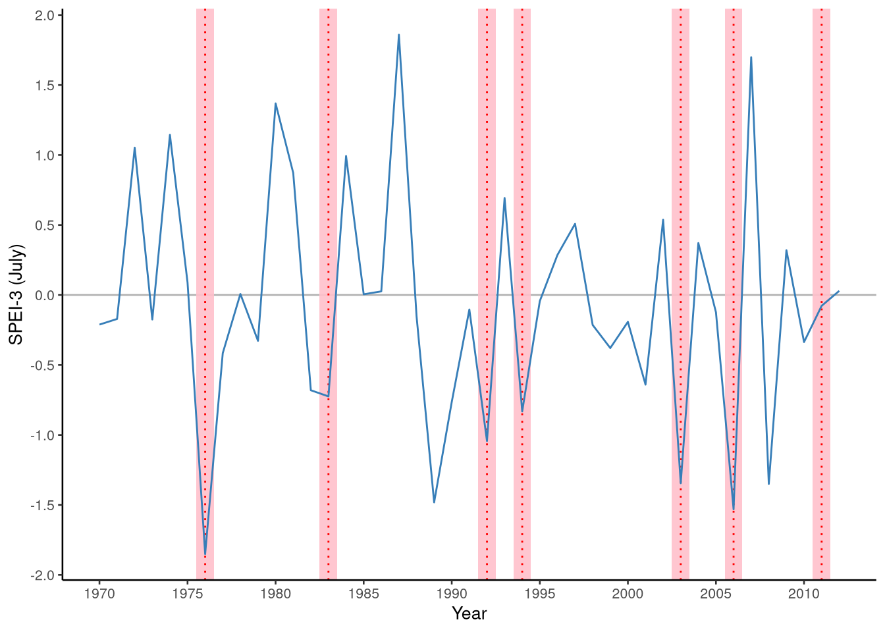
Load and prepare the drought indices
Next, we read in the SPI3, SPEI3, SPI12, and SPEI12 calculated at the national scale. This gives us precipitation-only and water balance indices for short (3 month) and long (12 month) accumulation periods. To do this, we read in each CSV file, select only the relevant columns, provide a column for the index name, and combine them all into a long dataframe that contains all data.
### Read in SPI/SPEI for 3 and 12 month periods
### Cut to Germany because we will be focusing on Germany
### Read in a dataframe for SPI 3
spi_3 <- read_csv(file.path(data_path, "spi_3_combined_countries_monthly_wide.csv")) %>%
mutate(index = "spi_3") %>% ### Create a column for the drought index
select(X, DE, index) ### Cut to only Germany
head(spi_3)
## # A tibble: 6 x 3
## X DE index
## <chr> <dbl> <chr>
## 1 1958-01 NA spi_3
## 2 1958-02 NA spi_3
## 3 1958-03 0.826 spi_3
## 4 1958-04 0.561 spi_3
## 5 1958-05 0.254 spi_3
## 6 1958-06 0.842 spi_3
### Read in a dataframe for SPEI 3
spei_3 <- read_csv(file.path(data_path, "spei_3_combined_countries_monthly_wide.csv")) %>%
mutate(index = "spei_3") %>% ### Create a column for the drought index
select(X, DE, index) ### Cut to only Germany
### Read in a dataframe for SPI 12
spi_12 <- read_csv(file.path(data_path, "spi_12_combined_countries_monthly_wide.csv")) %>%
mutate(index = "spi_12") %>%
select(X, DE, index)
### Read in a dataframe for SPEI 12
spei_12 <- read_csv(file.path(data_path, "spei_12_combined_countries_monthly_wide.csv")) %>%
mutate(index = "spei_12") %>%
select(X, DE, index)
### Combine data
spi_df <- rbind(spi_3, spei_3, spi_12, spei_12)
### Check data
head(spi_df)
## # A tibble: 6 x 3
## X DE index
## <chr> <dbl> <chr>
## 1 1958-01 NA spi_3
## 2 1958-02 NA spi_3
## 3 1958-03 0.826 spi_3
## 4 1958-04 0.561 spi_3
## 5 1958-05 0.254 spi_3
## 6 1958-06 0.842 spi_3
tail(spi_df)
## # A tibble: 6 x 3
## X DE index
## <chr> <dbl> <chr>
## 1 2012-07 -0.724 spei_12
## 2 2012-08 -1.13 spei_12
## 3 2012-09 -1.15 spei_12
## 4 2012-10 -1.03 spei_12
## 5 2012-11 -0.543 spei_12
## 6 2012-12 -0.714 spei_12
We then perform some reorganization, creating date, month, and year columns, then separate the name of index (SPI/SPEI) and the accumulation period (3,12) into separate columns before resorting.
### Reorganize data columns
spi_df <- spi_df %>%
mutate(date = as.Date(paste0(X, "-01"))) %>% ### Convert X column to a date by adding the first day of the month
mutate(month = month(date), year = year(date)) %>% ### Create month and year columns
separate(index, c("index_type", "index_months"), remove=FALSE) %>% ### Split the index column
rename(index_val = DE) %>% ### Rename the DE column to be the droughtindex value
select(date, year, month, index_val, index, index_type, index_months) %>% ### Reorganize the column order
arrange(index, date) ### Sort by index and then date
### Check results of reorganization
head(spi_df)
## # A tibble: 6 x 7
## date year month index_val index index_type index_months
## <date> <dbl> <dbl> <dbl> <chr> <chr> <chr>
## 1 1958-01-01 1958 1 NA spei_12 spei 12
## 2 1958-02-01 1958 2 NA spei_12 spei 12
## 3 1958-03-01 1958 3 NA spei_12 spei 12
## 4 1958-04-01 1958 4 NA spei_12 spei 12
## 5 1958-05-01 1958 5 NA spei_12 spei 12
## 6 1958-06-01 1958 6 NA spei_12 spei 12
tail(spi_df)
## # A tibble: 6 x 7
## date year month index_val index index_type index_months
## <date> <dbl> <dbl> <dbl> <chr> <chr> <chr>
## 1 2012-07-01 2012 7 0.520 spi_3 spi 3
## 2 2012-08-01 2012 8 0.314 spi_3 spi 3
## 3 2012-09-01 2012 9 -0.0310 spi_3 spi 3
## 4 2012-10-01 2012 10 -0.296 spi_3 spi 3
## 5 2012-11-01 2012 11 -0.0258 spi_3 spi 3
## 6 2012-12-01 2012 12 0.488 spi_3 spi 3
### Visual check
ggplot(spi_df, aes(x=date, y=index_val, colour=index_type)) + geom_line() + theme_classic(8) + facet_grid(index_months ~ . )

Cut to only Germany in July and merge impacts and drought indices
The final data processing step is to filter the impact data to include only Germany. For simplicity, we will only consider SPI/SPEI in July, so we filter the drought indices to only month 7. This means May, June, July for the 3 month accumulation period and the entire previous year from August until July for the 12 month accumulation. The 3 and 12 month period in July was chosen to mirror the findings of Stagge et al. (). Once both tables are properly filtered, we join them using a full join. A full join will ensure that no data is lost, although it may produce NAs where there is not a corresponding value for one of the tables being joined.
### Cut impact to only Germany
impacts_de <- impact_df %>%
filter(country == "DE")
### Visual check
ggplot(impacts_de, aes(x=year, y=impact_count, colour=country)) + geom_line() + theme_classic(8)
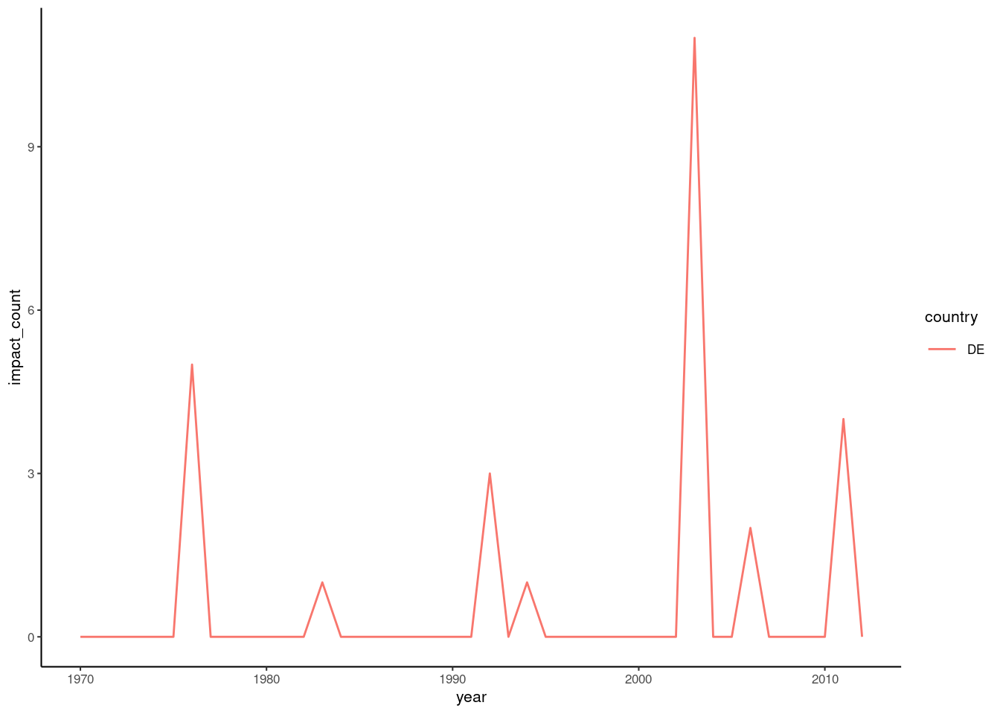
### Cut SPI and SPEI to only July. Our analysis will compare SPI/SPEI -3 and -12 in July with Annual Agricultural impacts
### This was chosen to mirror the findings of Stagge et al. () without having to include a monthly term
spi_de <- spi_df %>%
filter(month == 7)
### Merge dataframes using a full join (i.e. all records are included, even if data is missing)
spi_impacts <- spi_de %>%
full_join(impacts_de, by = "year") %>% ### Join on year
drop_na(impact) ### Drop rows with NA in the impact column
### Check merge
head(spi_impacts)
## # A tibble: 6 x 11
## date year month index_val index index_type index_months country
## <date> <dbl> <dbl> <dbl> <chr> <chr> <chr> <chr>
## 1 1970-07-01 1970 7 0.364 spei… spei 12 DE
## 2 1971-07-01 1971 7 -0.605 spei… spei 12 DE
## 3 1972-07-01 1972 7 -0.741 spei… spei 12 DE
## 4 1973-07-01 1973 7 -0.758 spei… spei 12 DE
## 5 1974-07-01 1974 7 -0.295 spei… spei 12 DE
## 6 1975-07-01 1975 7 1.25 spei… spei 12 DE
## # … with 3 more variables: impact_count <int>, nuts_n <int>, impact <lgl>
tail(spi_impacts)
## # A tibble: 6 x 11
## date year month index_val index index_type index_months country
## <date> <dbl> <dbl> <dbl> <chr> <chr> <chr> <chr>
## 1 2007-07-01 2007 7 2.20 spi_3 spi 3 DE
## 2 2008-07-01 2008 7 -0.868 spi_3 spi 3 DE
## 3 2009-07-01 2009 7 0.844 spi_3 spi 3 DE
## 4 2010-07-01 2010 7 -0.0168 spi_3 spi 3 DE
## 5 2011-07-01 2011 7 0.433 spi_3 spi 3 DE
## 6 2012-07-01 2012 7 0.520 spi_3 spi 3 DE
## # … with 3 more variables: impact_count <int>, nuts_n <int>, impact <lgl>
Preliminary visual estimate of a relationship between SPI and Agricultural Impacts in Germany
Our hypothesis is that agricultural impacts are at least partially affected by summer drought. And so, we expect that in years with low summer SPI or SPEI, there would be an increase in the likelihood of agricultural impacts. We can begin our analysis by plotting a time series of SPEI3 during our period and showing a red region when documented impacts occurred.
We do this by filtering the index/impact table to include only SPEI3. To plot the red impacts, we create a new dataframe that only includes impact years and add a 1 year (+/- 0.5 year) buffer around each impact. We then plot these variables against year on the X-axis.
### Only consider SPEI 3
plot_df <- spi_impacts %>%
filter(index == "spei_3")
plot_impacts <- plot_df %>%
select(year, impact) %>%
filter(impact == TRUE) %>%
mutate(left = year - 0.5, right = year + 0.5)
### Create a time series plot
p <- ggplot(plot_df, aes(x=year)) %>%
+ geom_hline(yintercept=0, color = "grey70") %>% ### Make a horizontal axis at y= 0
+ geom_rect(data = plot_impacts, aes(xmin=left, xmax=right, ymin=-Inf, ymax=+Inf), fill='pink', alpha=0.9) %>% ### Create a pink region around the impact
+ geom_vline(data = plot_impacts, aes(xintercept = year), linetype="dotted", color = "red") %>% ### Add a vertical line at the impact
+ geom_line( aes(y = index_val), colour="#377eb8") %>% ### Draw the time series of SPI12
+ theme_classic(8) %>%
+ scale_x_continuous(name = "Year", breaks = seq(1950,2100,5)) %>%
+ scale_y_continuous(name = "SPEI-3 (July)", breaks = seq(-3,3,0.5))
p
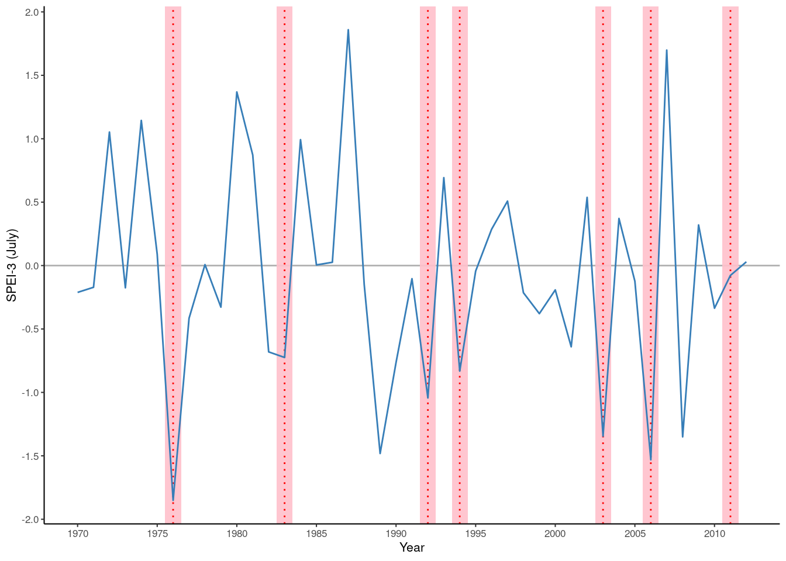 This plot makes us suspect a relationship between SPEI3 and agricultural impacts. When SPEI3 is severely negative (approximately -2) in 1975 an impact occurs, but when SPEI3 is near -1.5, we have 2 impact years (2003, 2006) and 2 non-impact years (1989, 2008). So, it appears that at an SPEI3 of -1.5, we have approximately a 50% chance of an impact. As we approach positive SPEI3, it appears like the likelihood of a drought impact drops to near 0; note, there are no impacts when SPEI3 is positive.
Can you modify this code to plot one of the other variables like SPI12? Try on your own. Check the Github for code to show all 4 drought indices plotted against impact on a single plot.
A time series figure is helpful for a preliminary check and our goal will ultimately be to create a time series of predicted impacts, but this type of figure is subjective. We would like a statistical basis. A first step towards a statistical analysis is to plot the proportion of impact/no impact in the same way we noted the number of impacts for SPEI3 near -2, -1.5 and 0 above. If we extended this to for all levels of SPEI3, we produce the following:
### Create a meaningful column for impacts when plotted
plot_df <- spi_impacts %>%
filter(index == "spei_3") %>%
mutate(impact_label = case_when( impact == TRUE ~ "Impact Reported",
TRUE ~ "No Impact"
)
) %>%
mutate(impact_label = factor(impact_label, levels=c( "No Impact", "Impact Reported")))
### Create a histogram showing the count in each impact category
p <- ggplot(plot_df, aes(x=index_val, fill = impact_label)) %>% ### Plot with SPI on x axis and fill using impact labels
+ geom_histogram(binwidth = 0.5) %>%
+ geom_vline(xintercept=0, color = "grey30", linetype="longdash") %>% ### Make a vartical axis at x= 0
+ theme_classic(8) %>%
+ scale_x_continuous(name = "SPEI-3 (July)", breaks = seq(-5,5,0.5)) %>%
+ scale_y_continuous(name = "Count", expand = c(0,0)) %>%
+ scale_fill_brewer(type = "qual", palette = "Set2") %>%
+ theme(legend.position = c(0.9, 0.9), legend.title = element_blank())
p
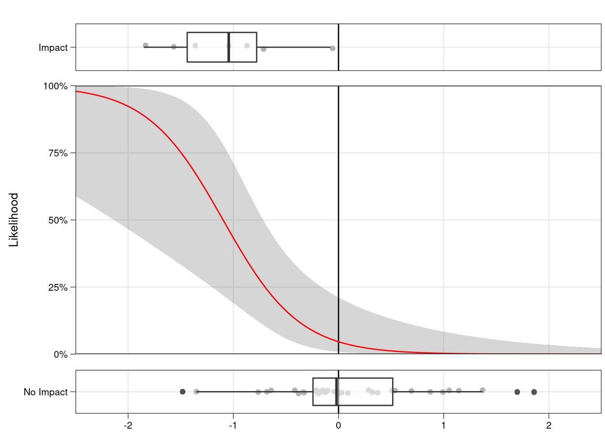
### Create a smoothed plot showing proportion in each category
p <- ggplot(plot_df, aes(x=index_val, fill = impact_label)) %>%
+ geom_density(position = "fill") %>%
+ geom_vline(xintercept=0, color = "grey30", linetype="longdash") %>% ### Make a vartical axis at x= 0
+ theme_classic(8) %>%
+ scale_x_continuous(name = "SPEI-3 (July)", breaks = seq(-5,5,0.5)) %>%
+ scale_y_continuous(name = "Proportion of Years in Impact Category", labels = scales::percent_format(accuracy = 5L), expand = c(0,0)) %>%
+ scale_fill_brewer(type = "qual", palette = "Set2") %>%
+ theme(legend.position = c(0.9, 0.9), legend.title = element_blank())
p
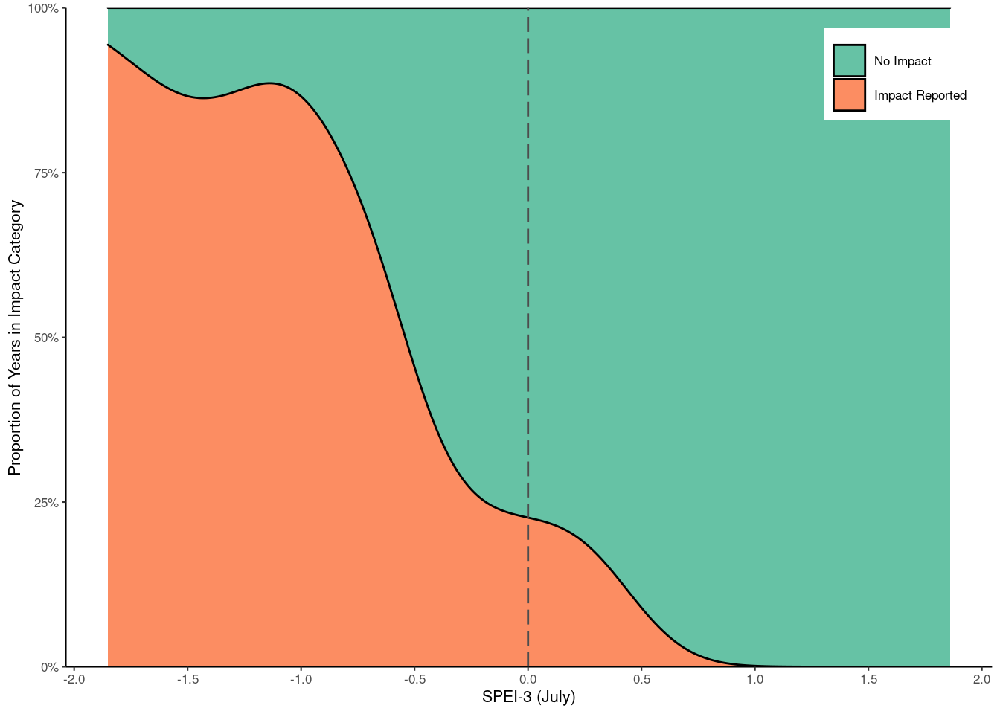 These plots show the relationship between SPEI3 (x-axis) and impact/no impact (colors), plotted as counts in the first figure and as total proportions in the second. If we performed this analysis for all 4 potential drought indices, we produce the following:
plot_all_df <- spi_impacts %>%
mutate(impact_label = case_when( impact == TRUE ~ "Impact Reported",
TRUE ~ "No Impact"
)
) %>%
mutate(impact_label = factor(impact_label, levels=c( "No Impact", "Impact Reported")))
### Create a smoothed plot showing proportion in each category
p <- ggplot(plot_all_df, aes(x=index_val, fill = impact_label)) %>%
+ geom_density(position = "fill") %>%
+ geom_vline(xintercept=0, color = "grey30", linetype="longdash") %>% ### Make a vartical axis at x= 0
+ theme_classic(8) %>%
+ scale_x_continuous(name = "Drought Index in July", breaks = seq(-5,5,0.5)) %>%
+ scale_y_continuous(name = "Proportion of Years in Impact Category", labels = scales::percent_format(accuracy = 5L), expand = c(0,0)) %>%
+ scale_fill_brewer(type = "qual", palette = "Set2") %>%
+ theme(legend.position = c(0.9, 0.9), legend.title = element_blank()) %>%
+ facet_wrap(~ index)
p
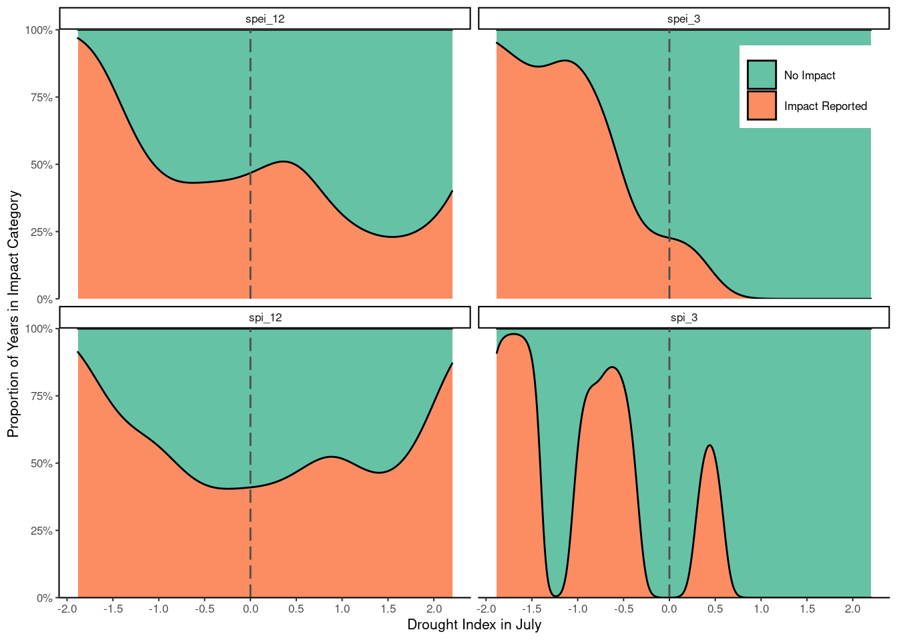
SPEI3 appears to have the strongest relationship with impact occurence. There is a relatively consistent increase in impact proportion as SPEI-3 decreases (shifts to the left).
SPI3 has a somewhat similar relationship, but it is confounded by some values where No Impacts dominate. If we chose a wider smoothing interval, this effect might not look so severe. For the 12 month accumulation periods, the impact years appear to be scattered throughout the SPI/SPEI range, with the Impact/No Impact never falling far below 50%. Also, the proportion of impacts appears to increase at both extremes (wet and dry). The 12 month drought indices don’t appear to be good (on their own) at sorting years into impact and non-impacts.
Logistic regression
The figures were just created are simplified analogies of logistic regression, which is the statistical method for modeling the relationship bweten binary (TRUE/FALSE) data and a set of predictor variables. Please keep this visual analogy in mind as we proceed with a more formal, statistical analysis using logistic regression to relate German agricultural impacts (binary data) with drought indices (predictor variables). For more details on logistic regression, see Chapter 7.
The first step for any regression is to organize the response (impacts) and predictor (SPI/SPEI) variables into columns that correspond to individual observations. We do this using the spread command.
### Create data for fitting, leave only SPI12
fit_data <- spi_impacts %>%
select(date, year, month, index, index_val, impact) %>%
spread(index, index_val)
### Check data
fit_data
## # A tibble: 43 x 8
## date year month impact spei_12 spei_3 spi_12 spi_3
## <date> <dbl> <dbl> <lgl> <dbl> <dbl> <dbl> <dbl>
## 1 1970-07-01 1970 7 FALSE 0.364 -0.211 0.378 -0.0826
## 2 1971-07-01 1971 7 FALSE -0.605 -0.171 -0.402 0.204
## 3 1972-07-01 1972 7 FALSE -0.741 1.05 -0.931 1.01
## 4 1973-07-01 1973 7 FALSE -0.758 -0.175 -1.27 -0.337
## 5 1974-07-01 1974 7 FALSE -0.295 1.14 -0.521 0.353
## 6 1975-07-01 1975 7 FALSE 1.25 0.0892 0.979 -0.294
## 7 1976-07-01 1976 7 TRUE -1.88 -1.85 -1.67 -1.64
## 8 1977-07-01 1977 7 FALSE -0.299 -0.415 -0.453 -0.592
## 9 1978-07-01 1978 7 FALSE 0.274 0.00736 0.0714 -0.0304
## 10 1979-07-01 1979 7 FALSE 0.763 -0.328 0.477 -0.339
## # … with 33 more rows
We then use the glm() command, which can be used to model a range of Generalized Linear Models (GLMs). For logistic regression, we must set the model family to be “binomial”. In this case we include the " + 1" to force the model to include an intercept. We then check a summary and calculate confidence intervals around the estimates.
### Fit simple logistic regression using SPEI-3 as a predictor variable
### Force an intercept to be included by using + 1
spei_3_fit <- glm(impact ~ spei_3 + 1, data = fit_data, family = "binomial")
spei_3_fit_summary <- summary(spei_3_fit)
### Check fit summary
spei_3_fit_summary
##
## Call:
## glm(formula = impact ~ spei_3 + 1, family = "binomial", data = fit_data)
##
## Deviance Residuals:
## Min 1Q Median 3Q Max
## -1.64740 -0.40334 -0.29607 -0.06872 2.39563
##
## Coefficients:
## Estimate Std. Error z value Pr(>|z|)
## (Intercept) -3.0242 0.8711 -3.472 0.000517 ***
## spei_3 -2.7561 0.9576 -2.878 0.004002 **
## ---
## Signif. codes: 0 '***' 0.001 '**' 0.01 '*' 0.05 '.' 0.1 ' ' 1
##
## (Dispersion parameter for binomial family taken to be 1)
##
## Null deviance: 38.207 on 42 degrees of freedom
## Residual deviance: 23.362 on 41 degrees of freedom
## AIC: 27.362
##
## Number of Fisher Scoring iterations: 6
confint(spei_3_fit)
## 2.5 % 97.5 %
## (Intercept) -5.181009 -1.634530
## spei_3 -5.049901 -1.167493
### Plot the relationship with SPEI-3
logistbarplot(log.fit = spei_3_fit, log.var = "spei_3")
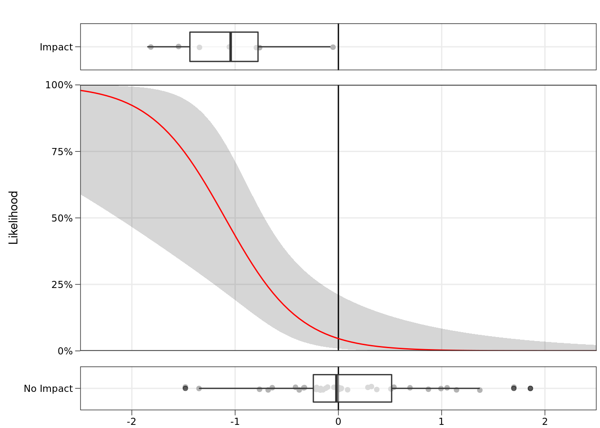 We can now see the relationship between SPEI3 and the likelihood on an impact. This relationship looks quite similar to our first visual checks. As expected, the likelihood of an impact is approximately 50% for SPEI3 of -1.1, near 100% for -2 and near 0 for positive values. Make a note of the S-shape of this curve. This is important - if we had used linear regression, we might have produced likelihoods greater than 1 or less than 0.
We now have an intercept and slope for our logistic regression, but what do these mean? Remember from Chapter 7 that logistic regression converts likelihoods of a binary response into log-odds space (also called logit space). We can do this conversion in R and see our regression line by doing the following:
### Create a holder dataframe
plot_df <- data.frame(spei_3 = seq(-3,3,0.1))
### Make a prediction using this new data
logodds_predict <- predict(spei_3_fit, plot_df, se.fit = TRUE)
### Add in prediction and confidence intervals
plot_df <- plot_df %>%
mutate(logodds = logodds_predict$fit) %>%
mutate(logodds_upper = logodds + (qnorm(0.025) * logodds_predict$se.fit)) %>% ### Two-tailed 95% confidence interval, or 0.025 in each tail
mutate(logodds_lower = logodds - (qnorm(0.025) * logodds_predict$se.fit))
plot_obs <- fit_data %>%
mutate(pred = predict(spei_3_fit)) %>%
mutate(residuals = residuals(spei_3_fit)) %>%
mutate(obs = pred + residuals)
### Plot Log-Odds
p <- ggplot(plot_df, aes(x=spei_3)) %>%
+ geom_vline(xintercept=0, color = "grey30", linetype="longdash") %>% ### Make a vartical axis at x= 0
+ geom_ribbon(aes(ymin = logodds_lower, ymax = logodds_upper), alpha = 0.2, fill = "grey20") %>%
+ geom_line(aes(y=logodds), colour="black") %>%
+ geom_point(data = plot_obs, aes(y = obs, colour=impact, shape = impact)) %>%
+ scale_y_continuous(name = "Log-Odds") %>%
+ scale_x_continuous(name = "SPEI-3 (July)", breaks = seq(-5,5,0.5)) %>%
+ scale_colour_brewer(name = "Impact", type = "qual", palette = "Set2") %>%
+ scale_shape_discrete(name = "Impact") %>%
+ theme_classic(8) %>%
+ theme(legend.position = c(0.9, 0.9))
p
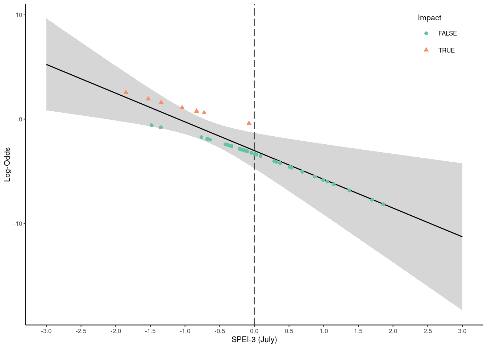
The y-axis is now in log-odds space and we can see that our modeled relationship is now linear. The slope (-2.76) and intercept (-3.02) exactly descibe this line. If we exponentiate the y-axis, we can see the relationship plotted based on the “odds ratio”.
### Log odds is based on the natural log, so can convert to odds ratio using exponential
plot_df <- plot_df %>%
mutate(odds = exp(logodds)) %>%
mutate(odds_upper = exp(logodds_upper)) %>%
mutate(odds_lower = exp(logodds_lower))
### Plot Odds ratio (e.g. 2 means impact is 2 x more like than non-impact 2:1)
p <- ggplot(plot_df, aes(x=spei_3)) %>%
+ geom_vline(xintercept=0, color = "grey30", linetype="longdash") %>% ### Make a vartical axis at x= 0
+ geom_ribbon(aes(ymin = odds_lower, ymax = odds_upper), alpha = 0.2, fill = "grey20") %>%
+ geom_line(aes(y=odds), colour="black") %>%
+ geom_point(data = plot_obs, aes(y = exp(obs), colour=impact, shape = impact)) %>%
+ scale_y_continuous(name = "Odds Ratio") %>%
+ scale_x_continuous(name = "SPEI-3 (July)", breaks = seq(-5,5,0.5)) %>%
+ scale_colour_brewer(name = "Impact", type = "qual", palette = "Set2") %>%
+ scale_shape_discrete(name = "Impact") %>%
+ theme_classic(8) %>%
+ theme(legend.position = c(0.9, 0.9)) %>%
+ coord_cartesian(ylim=c(0,6))
p
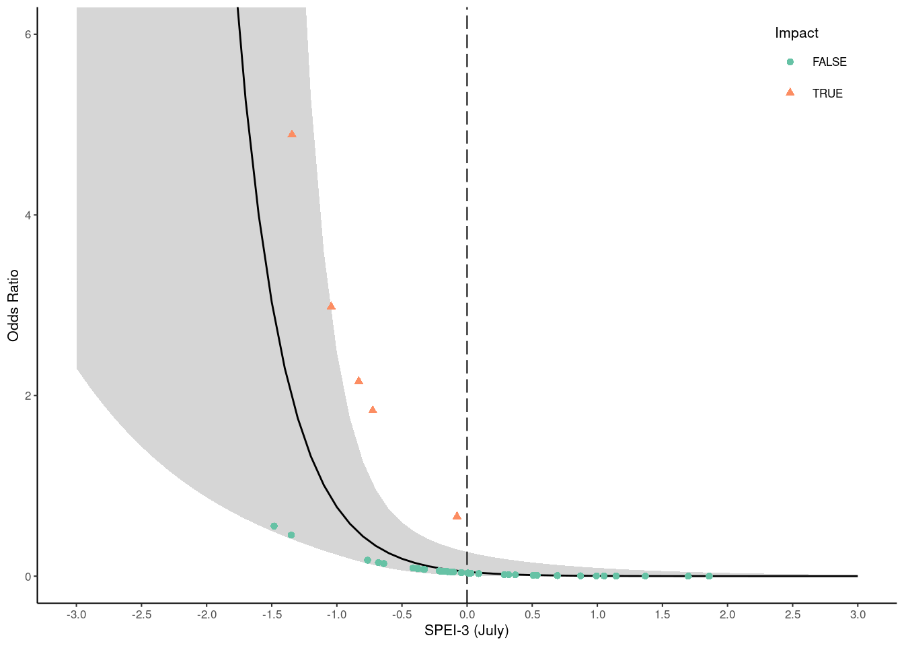
Now, for an SPEI3 of -1.1, the odds ratio is 1. This means there is 1:1 chance of impact:non impact, or 50%. Once we get to an odds raio of 3 (3:1), the probability of an impact becomes 3/4 or 75%. We make this conversion using the formula \(\frac{odds ratio}{1 + odds ratio}\). If we make this conversion, we arrive back at our oiginal figure presented above.
### Now to convert from Odds ratio to likelihood (probability, we use the logit transform)
### Divide odds by one plus odds
plot_df <- plot_df %>%
mutate(prob = odds / (1 + odds) ) %>%
mutate(prob_upper = odds_upper / (1 + odds_upper)) %>%
mutate(prob_lower = odds_lower / (1 + odds_lower))
plot_df
## spei_3 logodds logodds_upper logodds_lower odds odds_upper
## 1 -3.0 5.244120995 0.83388550 9.65435649 1.894492e+02 2.302247e+00
## 2 -2.9 4.968510369 0.74034548 9.19667526 1.438125e+02 2.096660e+00
## 3 -2.8 4.692899744 0.64629165 8.73950783 1.091693e+02 1.908450e+00
## 4 -2.7 4.417289119 0.55165163 8.28292660 8.287133e+01 1.736118e+00
## 5 -2.6 4.141678493 0.45633906 7.82701793 6.290832e+01 1.578285e+00
## 6 -2.5 3.866067868 0.36025016 7.37188558 4.775424e+01 1.433688e+00
## 7 -2.4 3.590457242 0.26325927 6.91765522 3.625065e+01 1.301164e+00
## 8 -2.3 3.314846617 0.16521293 6.46448030 2.751817e+01 1.179644e+00
## 9 -2.2 3.039235991 0.06592205 6.01254994 2.088928e+01 1.068143e+00
## 10 -2.1 2.763625366 -0.03484864 5.56209937 1.585723e+01 9.657516e-01
## 11 -2.0 2.488014741 -0.13739478 5.11342426 1.203736e+01 8.716261e-01
## 12 -1.9 2.212404115 -0.24209196 4.66690019 9.137658e+00 7.849840e-01
## 13 -1.8 1.936793490 -0.34942266 4.22300964 6.936473e+00 7.050950e-01
## 14 -1.7 1.661182864 -0.46001375 3.78237948 5.265536e+00 6.312750e-01
## 15 -1.6 1.385572239 -0.57468880 3.34583328 3.997113e+00 5.628800e-01
## 16 -1.5 1.109961613 -0.69454083 2.91446405 3.034242e+00 4.993037e-01
## 17 -1.4 0.834350988 -0.82103182 2.48973379 2.303319e+00 4.399774e-01
## 18 -1.3 0.558740362 -0.95612362 2.07360434 1.748469e+00 3.843800e-01
## 19 -1.2 0.283129737 -1.10243549 1.66869496 1.327277e+00 3.320614e-01
## 20 -1.1 0.007519112 -1.26339653 1.27843475 1.007547e+00 2.826922e-01
## 21 -1.0 -0.268091514 -1.44330196 0.90711894 7.648378e-01 2.361467e-01
## 22 -0.9 -0.543702139 -1.64709242 0.55968814 5.805948e-01 1.926091e-01
## 23 -0.8 -0.819312765 -1.87963257 0.24100704 4.407344e-01 1.526462e-01
## 24 -0.7 -1.094923390 -2.14446782 -0.04537896 3.345652e-01 1.171304e-01
## 25 -0.6 -1.370534016 -2.44257246 -0.29849558 2.539713e-01 8.693692e-02
## 26 -0.5 -1.646144641 -2.77195403 -0.52033525 1.927918e-01 6.253968e-02
## 27 -0.4 -1.921755266 -3.12843858 -0.71507195 1.463499e-01 4.378611e-02
## 28 -0.3 -2.197365892 -3.50701467 -0.88771712 1.110954e-01 2.998630e-02
## 29 -0.2 -2.472976517 -3.90291801 -1.04303502 8.433347e-02 2.018293e-02
## 30 -0.1 -2.748587143 -4.31215451 -1.18501978 6.401825e-02 1.340464e-02
## 31 0.0 -3.024197768 -4.73159655 -1.31679899 4.859679e-02 8.812390e-03
## 32 0.1 -3.299808394 -5.15887691 -1.44073988 3.689024e-02 5.748152e-03
## 33 0.2 -3.575419019 -5.59222798 -1.55861006 2.800369e-02 3.726716e-03
## 34 0.3 -3.851029645 -6.03033193 -1.67172736 2.125784e-02 2.404696e-03
## 35 0.4 -4.126640270 -6.47220119 -1.78107935 1.613700e-02 1.545819e-03
## 36 0.5 -4.402250895 -6.91708907 -1.88741272 1.224974e-02 9.907096e-04
## 37 0.6 -4.677861521 -7.36442503 -1.99129801 9.298878e-03 6.333895e-04
## 38 0.7 -4.953472146 -7.81376819 -2.09317610 7.058857e-03 4.041323e-04
## 39 0.8 -5.229082772 -8.26477394 -2.19339160 5.358438e-03 2.574271e-04
## 40 0.9 -5.504693397 -8.71716997 -2.29221682 4.067636e-03 1.637500e-04
## 41 1.0 -5.780304023 -9.17073882 -2.38986923 3.087777e-03 1.040396e-04
## 42 1.1 -6.055914648 -9.62530506 -2.48652424 2.343957e-03 6.603636e-05
## 43 1.2 -6.331525273 -10.08072588 -2.58232467 1.779318e-03 4.187901e-05
## 44 1.3 -6.607135899 -10.53688397 -2.67738783 1.350695e-03 2.653930e-05
## 45 1.4 -6.882746524 -10.99368220 -2.77181085 1.025324e-03 1.680755e-05
## 46 1.5 -7.158357150 -11.45103950 -2.86567480 7.783322e-04 1.063841e-05
## 47 1.6 -7.433967775 -11.90888776 -2.95904779 5.908385e-04 6.730321e-06
## 48 1.7 -7.709578401 -12.36716936 -3.05198745 4.485105e-04 4.256049e-06
## 49 1.8 -7.985189026 -12.82583522 -3.14454283 3.404681e-04 2.690361e-06
## 50 1.9 -8.260799652 -13.28484335 -3.23675595 2.584522e-04 1.700066e-06
## 51 2.0 -8.536410277 -13.74415759 -3.32866296 1.961933e-04 1.073960e-06
## 52 2.1 -8.812020902 -14.20374665 -3.42029515 1.489320e-04 6.782522e-07
## 53 2.2 -9.087631528 -14.66358333 -3.51167973 1.130555e-04 4.282395e-07
## 54 2.3 -9.363242153 -15.12364386 -3.60284044 8.582140e-05 2.703242e-07
## 55 2.4 -9.638852779 -15.58390742 -3.69379814 6.514775e-05 1.706063e-07
## 56 2.5 -9.914463404 -16.04435566 -3.78457115 4.945421e-05 1.076527e-07
## 57 2.6 -10.190074030 -16.50497235 -3.87517571 3.754111e-05 6.791748e-08
## 58 2.7 -10.465684655 -16.96574312 -3.96562619 2.849777e-05 4.284216e-08
## 59 2.8 -10.741295280 -17.42665516 -4.05593540 2.163290e-05 2.702090e-08
## 60 2.9 -11.016905906 -17.88769705 -4.14611476 1.642172e-05 1.704009e-08
## 61 3.0 -11.292516531 -18.34885854 -4.23617452 1.246586e-05 1.074464e-08
## odds_lower prob prob_upper prob_lower
## 1 1.558956e+04 9.947493e-01 6.971759e-01 0.99993586
## 2 9.864278e+03 9.930945e-01 6.770714e-01 0.99989863
## 3 6.244821e+03 9.909231e-01 6.561743e-01 0.99983989
## 4 3.955754e+03 9.880770e-01 6.345187e-01 0.99974727
## 5 2.507441e+03 9.843526e-01 6.121453e-01 0.99960135
## 6 1.590630e+03 9.794890e-01 5.891010e-01 0.99937171
## 7 1.009949e+03 9.731548e-01 5.654373e-01 0.99901083
## 8 6.419307e+02 9.649346e-01 5.412095e-01 0.99844462
## 9 4.085237e+02 9.543155e-01 5.164745e-01 0.99755814
## 10 2.603689e+02 9.406783e-01 4.912887e-01 0.99617399
## 11 1.662386e+02 9.232973e-01 4.657052e-01 0.99402052
## 12 1.063675e+02 9.013579e-01 4.397709e-01 0.99068620
## 13 6.823855e+01 8.739995e-01 4.135224e-01 0.98555718
## 14 4.392043e+01 8.403967e-01 3.869826e-01 0.97773841
## 15 2.838422e+01 7.998844e-01 3.601556e-01 0.96596813
## 16 1.843893e+01 7.521220e-01 3.330237e-01 0.94855683
## 17 1.205807e+01 6.972741e-01 3.055447e-01 0.92341898
## 18 7.953438e+00 6.361610e-01 2.776550e-01 0.88831107
## 19 5.305240e+00 5.703134e-01 2.492838e-01 0.84140175
## 20 3.591014e+00 5.018798e-01 2.203898e-01 0.78218322
## 21 2.477175e+00 4.333757e-01 1.910345e-01 0.71241025
## 22 1.750127e+00 3.673268e-01 1.615023e-01 0.63638038
## 23 1.272530e+00 3.059096e-01 1.324311e-01 0.55996180
## 24 9.556353e-01 2.506923e-01 1.048493e-01 0.48865721
## 25 7.419336e-01 2.025336e-01 7.998341e-02 0.42592529
## 26 5.943213e-01 1.616307e-01 5.885868e-02 0.37277384
## 27 4.891569e-01 1.276660e-01 4.194932e-02 0.32847909
## 28 4.115943e-01 9.998728e-02 2.911330e-02 0.29158116
## 29 3.523836e-01 7.777447e-02 1.978364e-02 0.26056481
## 30 3.057401e-01 6.016649e-02 1.322733e-02 0.23415083
## 31 2.679918e-01 4.634459e-02 8.735411e-03 0.21135135
## 32 2.367525e-01 3.557776e-02 5.715299e-03 0.19143080
## 33 2.104284e-01 2.724085e-02 3.712879e-03 0.17384618
## 34 1.879222e-01 2.081535e-02 2.398927e-03 0.15819401
## 35 1.684562e-01 1.588074e-02 1.543433e-03 0.14416991
## 36 1.514632e-01 1.210150e-02 9.897291e-04 0.13153975
## 37 1.365181e-01 9.213206e-03 6.329886e-04 0.12011961
## 38 1.232949e-01 7.009379e-03 4.039691e-04 0.10976184
## 39 1.115378e-01 5.329878e-03 2.573609e-04 0.10034550
## 40 1.010422e-01 4.051157e-03 1.637231e-04 0.09176962
## 41 9.164167e-02 3.078271e-03 1.040288e-04 0.08394849
## 42 8.319864e-02 2.338476e-03 6.603200e-05 0.07680830
## 43 7.559806e-02 1.776157e-03 4.187725e-05 0.07028467
## 44 6.874249e-02 1.348873e-03 2.653859e-05 0.06432091
## 45 6.254864e-02 1.024274e-03 1.680727e-05 0.05886661
## 46 5.694469e-02 7.777269e-04 1.063830e-05 0.05387670
## 47 5.186828e-02 5.904897e-04 6.730275e-06 0.04931063
## 48 4.726489e-02 4.483095e-04 4.256031e-06 0.04513175
## 49 4.308662e-02 3.403523e-04 2.690354e-06 0.04130685
## 50 3.929115e-02 2.583855e-04 1.700063e-06 0.03780572
## 51 3.584099e-02 1.961548e-04 1.073959e-06 0.03460086
## 52 3.270278e-02 1.489098e-04 6.782517e-07 0.03166718
## 53 2.984674e-02 1.130427e-04 4.282393e-07 0.02898173
## 54 2.724622e-02 8.581404e-05 2.703241e-07 0.02652355
## 55 2.487733e-02 6.514351e-05 1.706062e-07 0.02427348
## 56 2.271860e-02 4.945176e-05 1.076527e-07 0.02221393
## 57 2.075069e-02 3.753970e-05 6.791748e-08 0.02032885
## 58 1.895616e-02 2.849696e-05 4.284216e-08 0.01860351
## 59 1.731927e-02 2.163243e-05 2.702090e-08 0.01702442
## 60 1.582578e-02 1.642145e-05 1.704009e-08 0.01557923
## 61 1.446281e-02 1.246571e-05 1.074464e-08 0.01425662
Making a prediction
We can use this relationship now to make pedictions for new data, or we can view our fitted values using the original data. We can do this using the predict function. We can then calculate prediction and confidence intervals.
### Use the SPEI3 regression to predict the likelihood of an impact
### Keep the standard error for confidence intervals around prediction
predict_ts <- predict(spei_3_fit, newdata = fit_data, type = "link", se = TRUE)
### Add in prediction and confidence intervals
predict_df <- fit_data %>%
mutate(predict = plogis(predict_ts$fit)) %>%
mutate(predict_upper = plogis(predict_ts$fit + (qnorm(0.025) * predict_ts$se.fit))) %>%
mutate(predict_lower = plogis(predict_ts$fit - (qnorm(0.025) * predict_ts$se.fit))) %>%
select(-spi_3, -spei_12, -spi_12)
head(predict_df)
## # A tibble: 6 x 8
## date year month impact spei_3 predict predict_upper predict_lower
## <date> <dbl> <dbl> <lgl> <dbl> <dbl> <dbl> <dbl>
## 1 1970-07-01 1970 7 FALSE -0.211 0.0801 0.0207 0.264
## 2 1971-07-01 1971 7 FALSE -0.171 0.0723 0.0177 0.253
## 3 1972-07-01 1972 7 FALSE 1.05 0.00266 0.0000819 0.0801
## 4 1973-07-01 1973 7 FALSE -0.175 0.0730 0.0179 0.254
## 5 1974-07-01 1974 7 FALSE 1.14 0.00207 0.0000540 0.0739
## 6 1975-07-01 1975 7 FALSE 0.0892 0.0366 0.00599 0.193
Finally, we add these predictions to the original time series plot.
### Create a time series plot
p <- ggplot(predict_df, aes(x=year)) %>%
+ geom_hline(yintercept=0.5, color = "grey70", linetype="dotted") %>% ### Make a horizontal axis at y= 0
+ geom_rect(data = plot_impacts, aes(xmin=left, xmax=right, ymin=-Inf, ymax=+Inf), fill='pink', alpha=0.9) %>% ### Create a pink region around the impact
# + geom_vline(data = plot_impacts, aes(xintercept = year), linetype="dotted", color = "red") %>% ### Add a vertical line at the impact
+ geom_ribbon(aes(ymin = predict_lower, ymax = predict_upper), alpha = 0.2, fill = "grey20") %>%
+ geom_line( aes(y = predict), colour="#377eb8") %>% ### Draw the time series of SPI12
+ theme_classic(8) %>%
+ scale_x_continuous(name = "Year", breaks = seq(1950,2100,5)) %>%
+ scale_y_continuous(name = "Impact Likelihood", breaks = seq(0,1,0.1), labels = scales::percent_format(accuracy = 5L), expand=c(0,0))
p
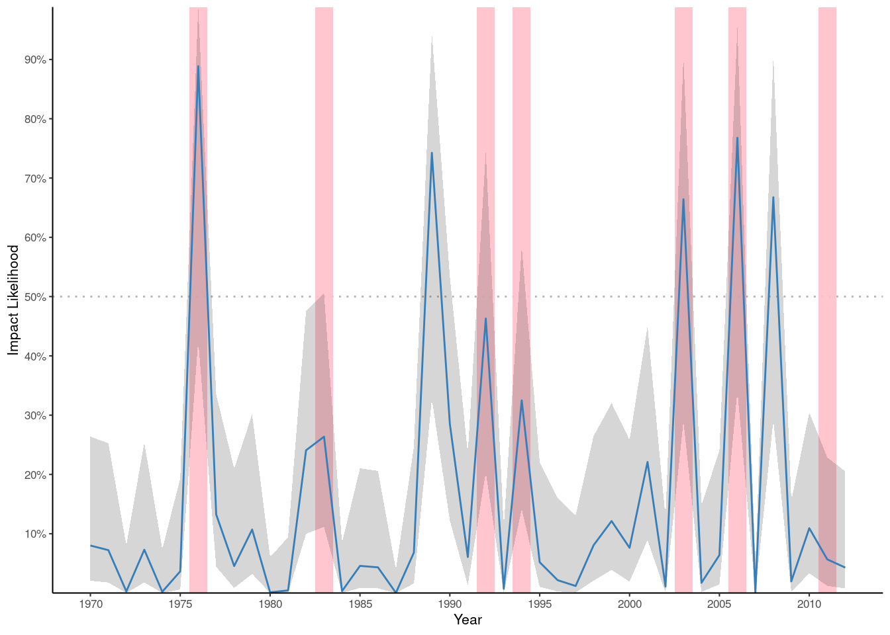
We can now see that most years, our likelihood of an agricultural impact remains below 10%. In years with low SPEI3, the likelihood quickly peaks. In 1976, our most severe drought in this period, the predicted likelihood is appoximately 90%. And, not surprisingly, there is an impact in this year. When likelihood is near 50%, we have approximately even numbers of years with impacts and those without, a sign of a good fit. Also, notice that the prediction intervals are not normally distributed around the estimate. This is becuase they are normally distributed in logit (log-odds) space. This is an important characteristic because it ensures that neither our estimate nor the interval produces impossible likelihoods (< 0 or > 1).
Adding a predictor and checking
Although the 12-month drought indices did not appear to fit the data well on their own, perhaps our fit would be improved by adding them as a second predictor. To test this, we can add a second variable to the logistic regression equation.
### See the value of adding a second predictor, maybe SPI12 has value when combined with SPEI3
two_pred_fit <- glm(impact ~ spei_3 + spi_12 + 1, data = fit_data, family = "binomial")
two_pred_fit_summary <- summary(two_pred_fit)
two_pred_fit_summary
##
## Call:
## glm(formula = impact ~ spei_3 + spi_12 + 1, family = "binomial",
## data = fit_data)
##
## Deviance Residuals:
## Min 1Q Median 3Q Max
## -1.71150 -0.41169 -0.23954 -0.04027 2.31610
##
## Coefficients:
## Estimate Std. Error z value Pr(>|z|)
## (Intercept) -3.3008 1.0241 -3.223 0.00127 **
## spei_3 -3.0722 1.0960 -2.803 0.00506 **
## spi_12 0.6533 0.8290 0.788 0.43064
## ---
## Signif. codes: 0 '***' 0.001 '**' 0.01 '*' 0.05 '.' 0.1 ' ' 1
##
## (Dispersion parameter for binomial family taken to be 1)
##
## Null deviance: 38.207 on 42 degrees of freedom
## Residual deviance: 22.720 on 40 degrees of freedom
## AIC: 28.72
##
## Number of Fisher Scoring iterations: 6
### Tougher to plot 2 variables. Need to make a counterfactual plot, holding each stationary.
logisthistplot(log.fit = two_pred_fit, log.var = "spei_3")
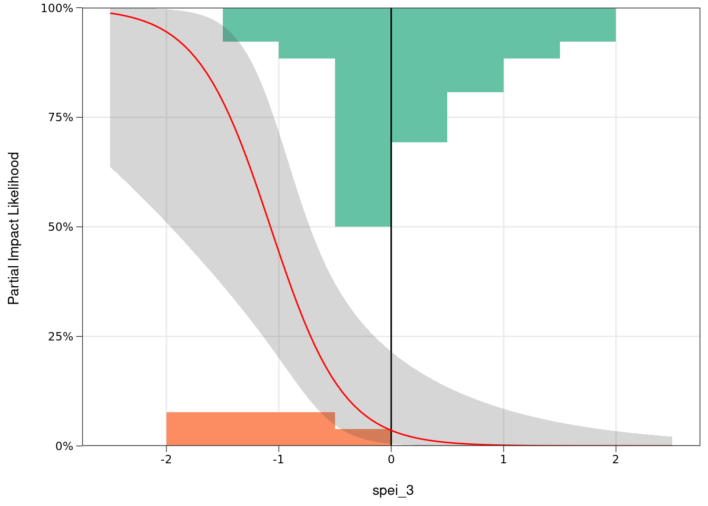
logisthistplot(log.fit = two_pred_fit, log.var = "spi_12")
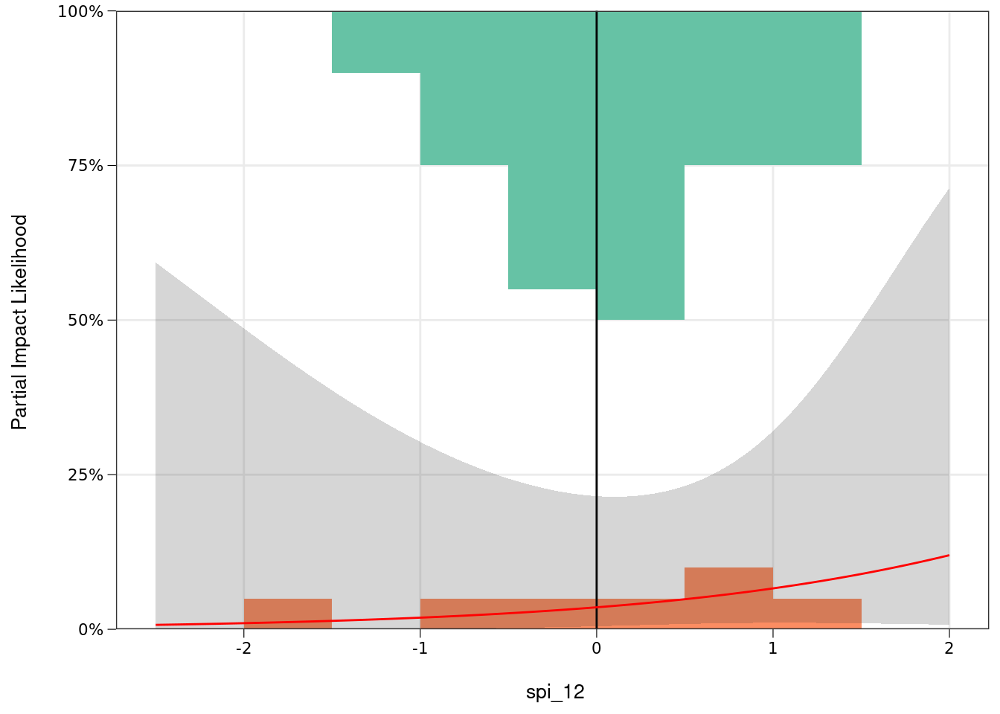
From this summary, we can see that the intercept and coeficient for SPEI3 are both significantly different from zero (p << 0.05). But, the coefficient for SPI12 is not significantly different from zero. We can see this with a p value of 0.43 and that the coefficient estimate of 0.65 has a 95% confidence interval that goes from -0.97 to 2.28 (calculated by multiplying the standard error by 1.96). If the relationship between SPI12 and impacts could just as easily be positive as negative, this suggests the effect is weak and highly uncertain. SPI12 probably should not be included in our model. For further confirmation, we can directly compare our 1 predictor model with our 2 predictor model.
anova(update(spei_3_fit, ~1), spei_3_fit, two_pred_fit, test="Chisq")
## Analysis of Deviance Table
##
## Model 1: impact ~ 1
## Model 2: impact ~ spei_3 + 1
## Model 3: impact ~ spei_3 + spi_12 + 1
## Resid. Df Resid. Dev Df Deviance Pr(>Chi)
## 1 42 38.207
## 2 41 23.362 1 14.845 0.0001167 ***
## 3 40 22.720 1 0.642 0.4229925
## ---
## Signif. codes: 0 '***' 0.001 '**' 0.01 '*' 0.05 '.' 0.1 ' ' 1
### Comparison with the Null model (no predictor) shows that SPEI-3 improves the model fit significantly
### Adding SPI12 does not significantly improve the model
### You can also see this by checking the AIC values, which actually increase (get worse) with addition of SPI-12
AIC(spei_3_fit, two_pred_fit)
## df AIC
## spei_3_fit 2 27.36158
## two_pred_fit 3 28.71959
The Chi-Squared test confirms that adding SPEI3 produces a significant impovement over a model with only an intercept (no relationship with drought), but that adding a second predictor does not produce a significant improvment. We can further confirm using the Akaike Information Criterion (AIC), for which better fits produce lower AIC values. AIC for the 2 predictor model increases, suggesting a worse fit.